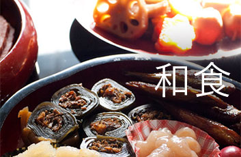

新着レシピ


様々な食材を使用し作り上げた色とりどりの前菜はテーブルをカラフルに彩ります♪


柔らかく蒸したあとはホイッパーで混ぜるだけの簡単レシピです！かぼちゃは、ビタミンやミネラルが豊富なので美容や冷え性に良いですよ♪


米粉を使ったさっくりとした軽い食感のパンです♪米粉は日本の主食のお米で作られており、ヘルシーで口当たりもいいですよ♪


エビがサラダやスープ、ごはんなどに入っていると、テンションが上がりますよね♪ただ、エビは意外に調理が難しいという声も...。実はあるテクニックを使うだけでエビがプリップリに仕上がっちゃうんです♪
今だからこそ見直したい「和食」

普段、私達が何気なく口にしている和食ですが、その基本は一汁三菜。ご飯、味噌汁、お漬物の他、主菜（魚またはお肉）、さ副菜として季節毎の野菜と豆腐で構成されます。
昔から、「旬の野菜を食べましょう」と言いますが、それは素材がじっくりと時間をかけて蓄積してきた旨みや栄養価が最高になったところでいただいて、効率よく栄養をと取り風邪などの予防をしましょうね、ということです。
それでは各季節毎の旬の野菜について調べてみましょう。